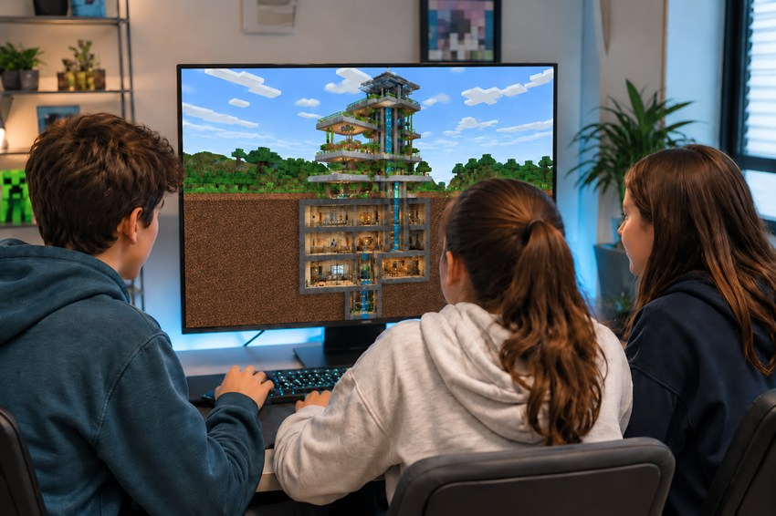
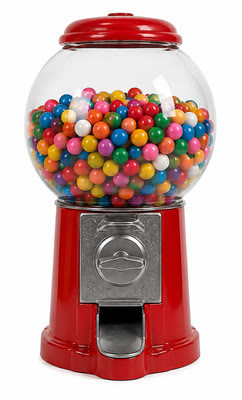
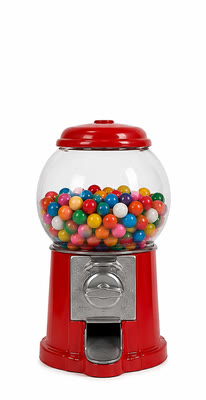

التمرين هو أفضل طريقة لتعزيز التعلم
3 أسئلة
أجيبوا بشكل صحيح عن سؤالين فما فوق لتتمكّنوا من التقدّم.
يوجد في الصف x أولاد و-2x بنات.
أ. ما هي النسبة المختزلة بين عدد الأولاد وعدد البنات؟
يوجد في الصف x أولاد و-2x بنات.
معلوم أن عدد البنات هو 24.
ب. كم عدد الطلاب في الصف؟
طالبًا.
النسبة بين عدد كتب دنيا وعدد كتب أمل هي (x + 5) : (2x + 1) .
معطى: x = 10 .
ما هي النسبة المختزلة بين عدد كتب دنيا وعدد كتب أمل؟

أ. في لعبة حاسوب، تخطط مجموعة من اللاعبين مبنى ضخمًا.
لكي يبدو المبنى متناسبًا، اتّفقوا على قاعدة ثابتة:
مقابل كل a طوابق تحت الأرض، سيتم بناء 3 طوابق فوقها.
اختاروا جميع التعابير التي تصف النسبة بين عدد الطوابق تحت الأرض وعدد الطوابق فوق الأرض.
ربما علينا تغيير القاعدة؟
ب. النسبة بين عدد الطوابق تحت الأرض وعدد الطوابق فوق الأرض a : 3a .
أكملوا:
إذا عوّضنا a = 3، فإن عدد الطوابق فوق الأرض سيكون
عمل رائع!
فيما يلي سؤالان إضافيان بمستوى صعوبة أعلى
لعبت حنان وسامر في الأركيد وجمعا بطاقات جوائز.
النسبة بين عدد بطاقات حنان وعدد بطاقات سامر هي 7 : 4 .
بعد أن أعطت حنان لسامر 15 بطاقة، أصبح عدد بطاقات سامر مساويًا لعدد بطاقات حنان.
أكملوا:
وُضعت في مجمّع ألعاب آلتان للحلوى بأحجام مختلفة.
في الآلة 1 توجد كمية أكبر من الحلوى، والنسبة بين عدد قطع الحلوى في الآلة 1 وعدد الحلوى في الآلة 2 يجب أن تكون 7 : 3 .
سمر مسؤولة عن تعبئة الآلتين وتريد معرفة عدد قطع الحلوى التي عليها وضعها في كل واحدة.
أ. اسحبوا ولائموا لكل آلة التعبير الذي يصف عدد قطع الحلوى فيها.

الآلة 1

الآلة 2
وُضعت في مجمّع ألعاب آلتان للحلوى بأحجام مختلفة.
في الآلة 1 توجد كمية أكبر من الحلوى، والنسبة بين عدد قطع الحلوى في الآلة 1 وعدد الحلوى في الآلة 2 يجب أن تكون 7 : 3 .
سمر مسؤولة عن تعبئة الآلتين وتريد معرفة عدد قطع الحلوى التي عليها وضعها في كل واحدة.
ب. معطى: في الآلة 1 يوجد 120 قطعة حلوى أكثر من الآلة 2.
اسحبوا المعادلة المناسبة إلى المكان المشار إليه.
الآلة 17x
الآلة 23x

ت. حصلنا على المعادلة:
3x + 120 = 7x
ساعدوا سمر على تعبئة الآلتين بالكمية المناسبة:
حلوا المعادلة وجدوا عدد قطع الحلوى التي عليها وضعها في كل آلة.
للآلة 1: قطعة حلوى.
للآلة 2: قطعة حلوى.